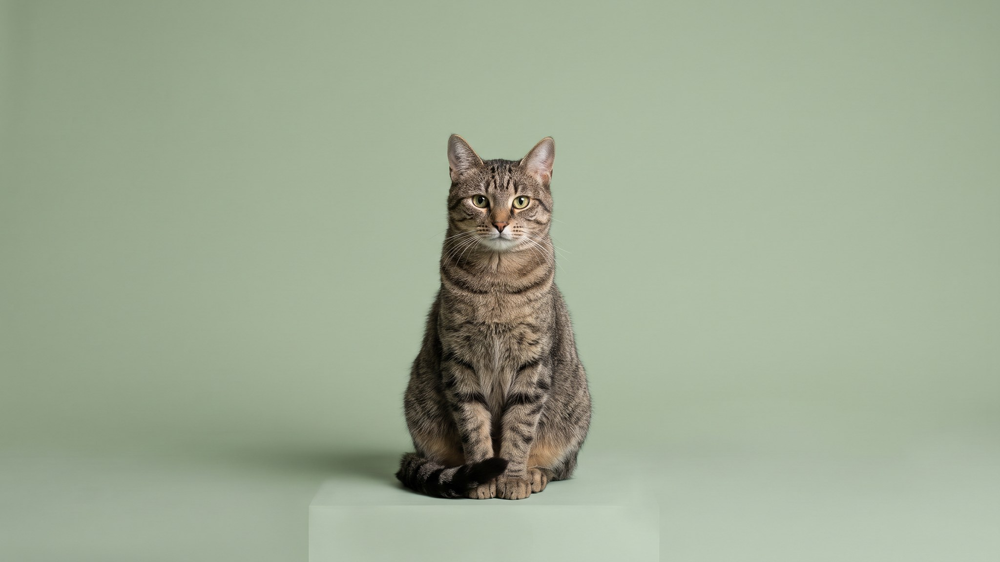

Кошка зашла в лоток, сделала дела и ушла, ничего не закопав. Многие хозяева воспринимают это как протест или вредность. На деле поведение объясняется конкретными причинами, большинство из которых решаются перенастройкой условий дома. Разбираем, почему кошки вообще закапывают, и что проверить, если перестали.
🐾 У вашей кошки так же?
Расскажите в AnimaLife, как ведёт себя ваш питомец, — приложение объяснит причину и даст пошаговый план. Бесплатно, без записи к специалисту.
Разобрать свой случай → Разобрать в MAX →
У вас iPhone? AnimaLife есть в App Store
Закапывание в лотке унаследовано от диких предков. В природе запах продуктов жизнедеятельности привлекает хищников и сигнализирует о присутствии конкурентов. Подчинённые животные закапывают свои следы, чтобы не попасть в поле зрения доминанта. Доминантные особи, напротив, нередко оставляют запах на виду: так они маркируют территорию.
Домашняя кошка, которая чувствует себя единоличной хозяйкой квартиры, может намеренно не закапывать: она сигналит, что территория её. Нормальное поведение уверенной кошки.
Чаще всего достаточно изменить несколько условий:
Если кошка раньше всегда закапывала, а потом резко перестала, и при этом заметно, что она торопится выйти из лотка или трогает лапы необычно, стоит показать её врачу. Дискомфорт при копании может указывать на чувствительность лап или другие состояния, которые оценит врач. Обсудите изменение поведения с ветеринаром, особенно если к нему добавились другие сигналы тревоги.
Материал носит информационный характер и не заменяет очную консультацию ветеринара.
🐾 Хотите понять, что кошка говорит вам?
Опишите ситуацию или пришлите видео в AnimaLife — AI разберёт поведение вашего питомца и подскажет, что делать. Бесплатно, ответ за минуту.
Разобрать поведение → Разобрать в MAX →
У вас iPhone? AnimaLife есть в App Store
🐾 Понравился разбор?
Подпишитесь на канал — каждый день разбираем по одному тревожному симптому у кошек и собак: что в пределах нормы, а когда пора к врачу. Подпишитесь, чтобы не пропустить разбор, который может спасти здоровье вашего питомца.